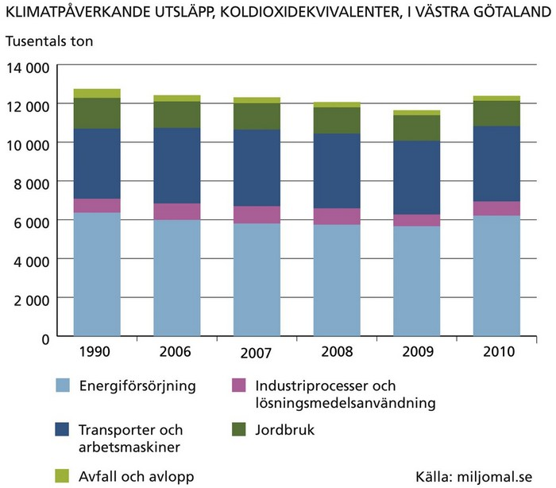
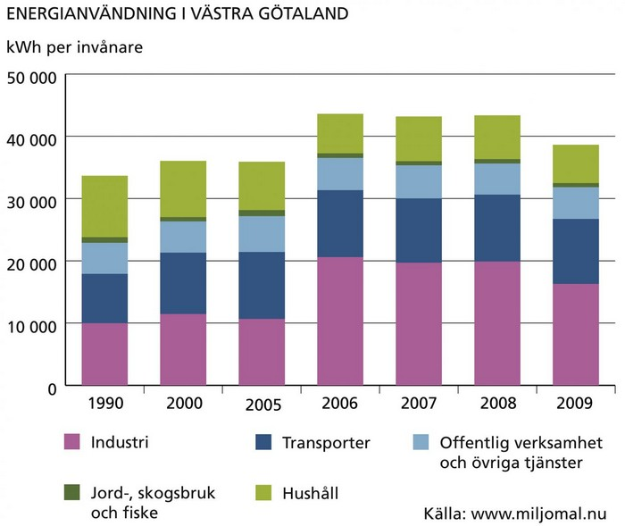
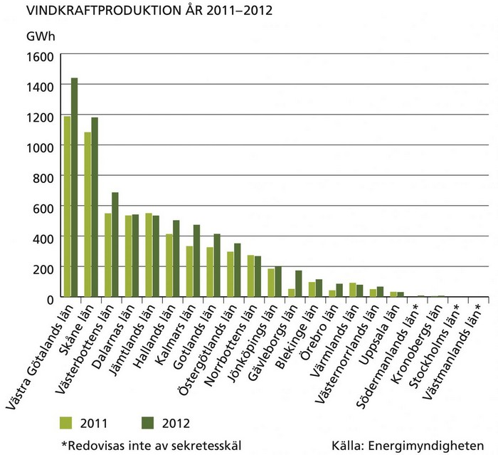
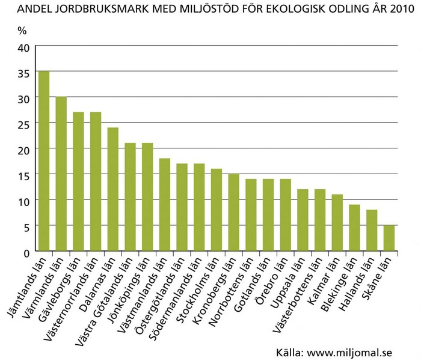
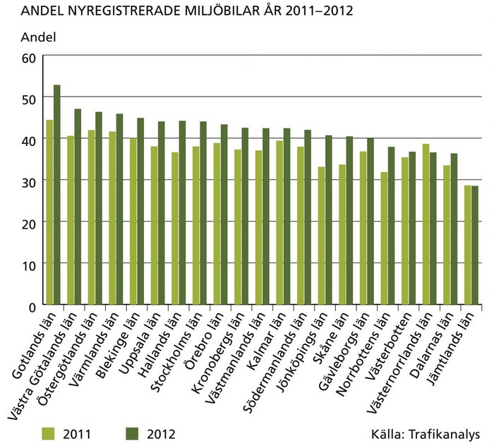
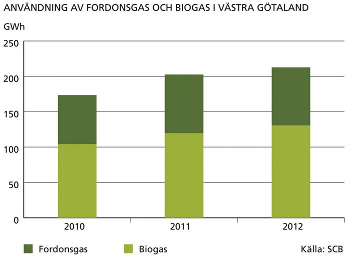
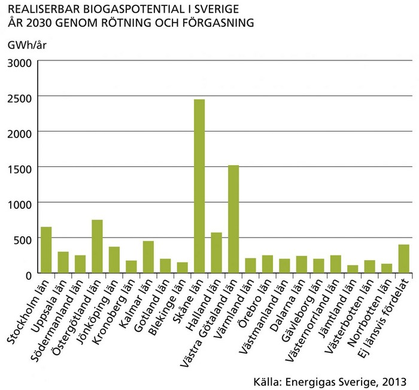

Klimatförändringar är en av de största utmaningarna vi står inför. I Västra Götaland har utsläppen av växthusgaser minskat med cirka tre procent mellan åren 1990 och 20101. Utsläppen i Sverige har minskat med 16 procent under samma period. Västra Götalands totala utsläpp var 12,4 miljoner ton år 2010, vilket är en ökning jämfört med 2009. Det är främst inom energiförsörjning och inom industrin som ökningen skett, vilket kan förklaras av att året 2010 dels var förhållandevis kyligt, dels var ett år av ekonomisk återhämtning. Utsläppen från transportsektorn ökade något under 2010 jämfört med föregående år. Ökningen beror på ökad tung lastbilstrafik under året. Däremot fortsätter utsläppen från personbilstrafiken att minska något jämfört med föregående år.
1 Utsläpp från internationell sjö- och flygtrafik är inte medräknade i länets utsläppsuppgifter. Nationellt har dessa utsläpp ökat kraftigt sedan 1990 och uppgick 2009 till 9,4 miljoner ton.

Den slutliga energianvändningen2 per invånare i Västra Götalands län var år 2009 i samma storleksordning som genomsnittet för landet. Den tidigare ökningen har avstannat de senaste åren som redovisas i diagrammet nedan. 2009 förbrukades årligen drygt 40 000 kWh per invånare och hushållen stod för cirka 15 procent av den totala användningen.
2 Med slutlig energianvändning menas att de så kallade omvandlings- och distributionsförluster som sker på vägen till användaren inte är medräknade i de siffror som presenteras.

Utbyggnaden av förnybar energiproduktion är prioriterad i Västra Götaland. Bland annat är vindkraften under kraftig utbyggnad. Under de två senaste åren har drygt 100 nya vindkraftverk byggts i Västra Götaland och produktionen av vindkraft har nästan fördubblats från år 2010 till år 2012. Av alla län har Västra Göraland flest vindkraftsverk.

Västra Götaland är ett län med stor jordbruksareal. Drygt 20 procent av arealen odlas ekologiskt, en andel som har legat relativt konstant de senaste åren. En ökande andel av den ekologiska arealen är eko-certifierad. Viktiga delar i det ekologiska jordbruket är en hög självförsörjningsgrad och att kemiska bekämpningsmedel och konstgödsel ersätts med andra åtgärder. Ett viktigt syfte är att få en större biologisk mångfald på åkermarken och i dess närmaste omgivning. Genom en ökad andel ekologisk odling förbättras möjligheterna för invånarna att köpa närproducerade livsmedel som också är ekologiska.

Utbyggnaden av infrastrukturen för alternativa drivmedel, bränslesnålare fordon samt ett mer sparsamt körsätt, är andra viktiga steg mot lägre koldioxidutsläpp. Både antalet och andelen miljöfordon har ökat snabbt under senare år. År 2012 var 47 procent av alla nyregistrerade bilar i Västra Götaland miljöbilar. Andelen miljöbilar i trafik var betydligt lägre.
Cirka nio procent av alla nyregistrerade bilar i Västra Götaland var gasbilar 2012. Det kan jämföras med snittet för riket som var knappt 2 procent. Fordonsgas är metan i form av antingen fossil naturgas eller biogas som används som drivmedel. Biogas är förnybart och är idag det mest miljöanpassade fordonsbränslet med minimal klimatpåverkan. Antalet gasfordon har mer än tiodubblats det senaste decenniet. Parallellt har även utbyggnaden av antalet tankstationer ökat.
Även produktionen av biogas har ökat kraftigt de senaste åren och står för en ökande andel av fordonsgasen i Västra Götaland. Skåne, Västra Götaland och Stockholms län står tillsammans för mer än 70 procent av de totala leveranserna av fordonsgas i Sverige. I Skåne och Västra Götaland finns stor potential att att ytterligare utveckla produktionen av biogas genom rötning.



This is just a landing page.
Back